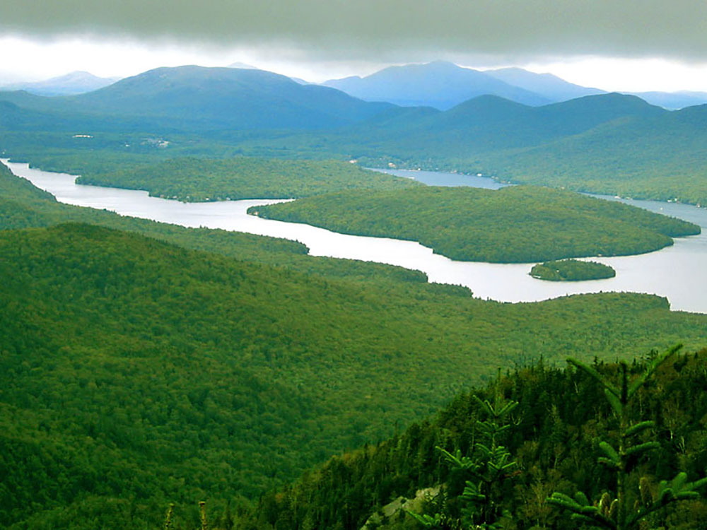
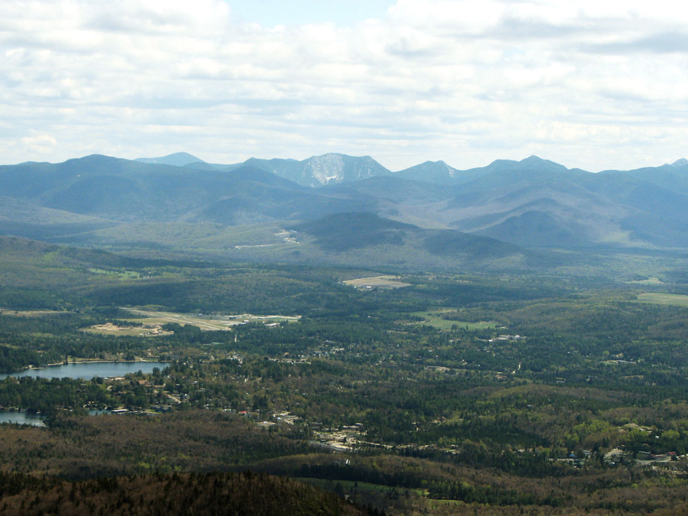

Hosted the Winter Olympics twice, leaving behind a bobsled run, ski jump complex, and speed skating oval still open to visitors.
General Information
Olympic venues and attractions have varying hours; check individual venue websites
Lake Placid Olympic Museum: daily 10am–5pm (seasonal variations)
Lake Placid Olympic Museum: adults ~$14, children ~$9
Whiteface Mountain lift tickets: vary by season
How to Get There
From Albany, NY (approximately 140 miles): Take I-87 N (Adirondack Northway) to Exit 30 (Underwood), then take NY-73 W approximately 28 miles through Keene Valley into Lake Placid village. Total drive is about 2.5 hours.
Overview
Lake Placid is a village of about 2,000 people in the High Peaks region of the Adirondack Mountains in northern New York. It is famous for hosting the 1932 and 1980 Winter Olympics, the only place in North America to host the Winter Games twice, and for the "Miracle on Ice," when the U.S. hockey team beat the Soviet Union on February 22, 1980. It is also a center for skiing, bobsled, climbing and the 46 High Peaks.
People come to Lake Placid to ski at Whiteface Mountain, ride a bobsled or watch Olympic athletes train, visit Olympic venues, shop and eat on Main Street, swim and paddle in Mirror Lake and hike in the High Peaks. It is a popular year-round destination, with winter sports from December to March and hiking, boating and the Ironman triathlon in summer.
History
Lake Placid began as a remote logging and farming area. In 1849 the abolitionist John Brown moved to nearby North Elba, where land was offered to Black settlers, and he is buried at his farm. In 1895 Melvil Dewey, the creator of the Dewey Decimal System, founded the Lake Placid Club, which made the village a well-known resort. The village won the 1932 Winter Olympics, the first U.S. Winter Games, and again hosted in 1980, when the arena and sports facilities were expanded. Since then Lake Placid has served as a training center for U.S. winter athletes and a host to international competitions, including the 2023 World University Games.
Sightseeing and Popular Landmarks
The Olympic Center is the heart of the Olympic legacy, with the Herb Brooks Arena where the 1980 "Miracle on Ice" game was played, plus the speed skating oval. The Lake Placid Olympic Museum displays Olympic history, and the Olympic Ski Jumping Complex has an elevator and observation deck at the top of the 120-meter jump. Mt. Van Hoevenberg has the Olympic bobsled, luge and skeleton track, where visitors can ride a bobsled, and Whiteface Mountain, 13 miles away, has the biggest vertical drop in the eastern United States and an auto road to the summit. Main Street has shops and restaurants overlooking Mirror Lake.
Culture and Museums
The Olympic Museum and the Olympic sites teach visitors about the 1932 and 1980 Games. The John Brown Farm State Historic Site preserves the farmhouse and grave of the famous abolitionist. The Lake Placid Center for the Arts hosts concerts, films and exhibits. Events include the Ironman Lake Placid triathlon in July and winter festivals and competitions.
Parks
Mirror Lake in the village is open for swimming and paddling in summer and ice skating in winter, and a path circles the lake. Lake Placid itself, the larger lake just north, is popular for boating. The High Peaks Wilderness, which includes Mount Marcy, New York's tallest peak, is a short drive away, and trails like Mount Jo and Cascade Mountain are popular day hikes. In winter, cross-country and snowshoe trails at Mt. Van Hoevenberg and Heart Lake add more outdoor options.
Seasons and Weather
Lake Placid has a humid continental climate with long, cold, snowy winters and short, mild summers. January highs are in the 20s °F, with lows below zero and about 100 inches of snow a year, which makes it ideal for skiing. Summer highs are in the 70s and low 80s °F with cool nights, and fall foliage peaks in late September and early October. Spring "mud season" is wet and quiet, and black flies appear in May and June. Mountain weather can change quickly, so dress in layers.
This article uses material from the Wikipedia article "Lake Placid, New York", which is released under the Creative Commons Attribution-Share-Alike License 3.0. Additional information from Lake Placid & Essex County, the Olympic Regional Development Authority, Adirondacks Regional Tourism Council, National Weather Service Burlington and the official websites of the attractions mentioned.
Featured Locations

John Brown Farm State Historic Site
Historic farmhouse and burial site preserving the legacy of a prominent abolitionist through guided tours, exhibits, and scenic walking trails.
Lake Placid Olympic Museum
Interactive sports museum showcasing Olympic artifacts, athlete stories, and memorable moments from two Winter Olympic Games.
Lake Placid Olympic Ski Jumping Complex
World-class training and competition venue featuring towering ski jumps, panoramic mountain views, aerial sports heritage, and immersive Olympic experiences.
Lake Placid Olympic Center
Historic Olympic venue featuring legendary ice arenas, sports exhibits, athletic events, and year-round activities celebrating Winter Games heritage.


